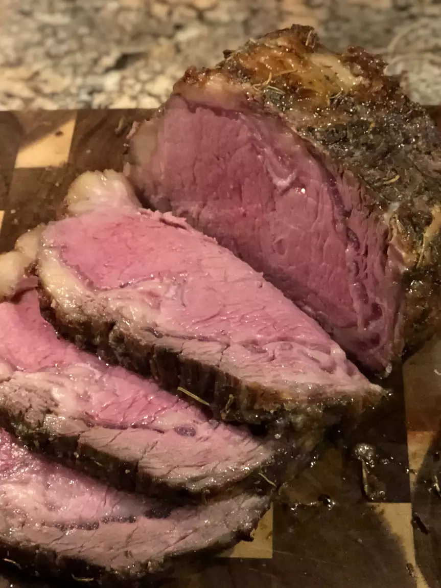

Prime Rib

Description
A succulent seared standing rib roast cooked to perfection.
Ingredients
- 3lbs standing rib roast.
- 2Tbsp. kosher salt.
- 1Tbsp. vegetable oil.
Directions
- Using a sharp knife, cut slits in surface layer of fat, spaced 1 inch apart, in crosshatch pattern,
being careful to cut down to, but not into meat. Rub 2 tablespoons of salt over entire roast and
into slits. Place meat back on bones (to save space in refrigerator), transfer to large plate, and
refrigerate, uncovered, at least 24 hours and up to 96 hours.
- Adjust oven rack to middle position and heat oven to 200 degrees. Heat oil in 12-inch skillet over
high heat until just smoking. Sear sides and top of roast (reserving bone) until browned, 6 to 8
minutes total (do not sear side where roast was cut from bone). Place meat back on ribs, so bones
fit where they were cut, and let cool for 10 minutes; tie meat to bones with 2 lengths of twine
between ribs. Transfer roast, fat side up, to wire rack set in rimmed baking sheet and season with
pepper. Roast until meat registers 110 degrees Fahrenheit. 3 to 4 hours.
- Turn off oven; leave roast in oven, opening door as little as possible, until meat registers about
120 degrees for rare or about 125 degrees for medium-rare, 30 to 75 minutes longer.
- Remove roast from oven (leave roast on baking sheet), tent loosely with aluminum foil, and let
rest for at least 30 minutes and up to 75 minutes.
- Adjust oven rack about 8 inches from broiler element and heat broiler. Remove foil from roast,
form into 3-inch ball, and place under ribs to elevate fat cap. Broil until top of roast is well
browned and crisp, 2 to 8 minutes.
-
Transfer roast to carving board; cut twine and remove roast from ribs. Slice meat into 3/4-inch-
thick slices. Season with coarse salt to taste, and serve.